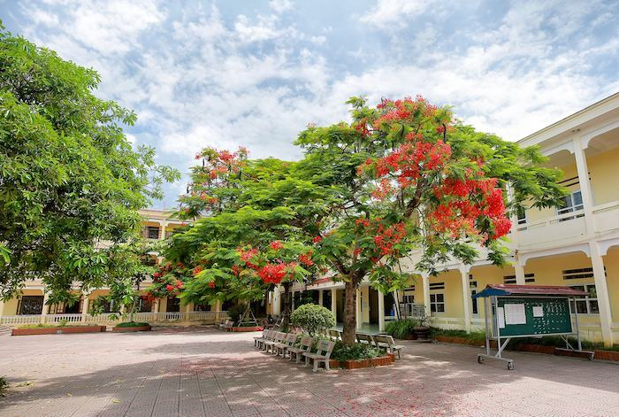

- THPT Phạm Ngũ Lão là ngôi trường cấp 3 của huyện Thủy Nguyên. Ngôi trường cấp 3 này nằm trên địa phận xã Ngũ Lão, huyện Thụy Nguyên, tỉnh Hải Phòng.
Trường cấp III Phục Lễ được thành lập tháng 09 năm 1973 trên cơ sở là phân hiệu của trường cấp III Thuỷ Sơn ( Nay là trường THPT Lý Thường Kiệt). Đến năm 1983 trường đổi tên thành trường THPT Phạm Ngũ lão. Những năm đầu tiên, trường đặt tại thôn Sỏ xã Phục Lễ, lớp học là các kho của hợp tác xã diện tích gần 3.000m2 . Các thầy cô giáo phải ở nhờ trong nhà dân để thuận tiện cho việc giảng dạy. Đến tháng 4 năm 1975 được sự đồng ý của UBND thành phố, Sở giáo dục, UBND huyện, trường chuyển về thôn Trung Sơn xã Ngũ Lão và là trung tâm của 9 xã trong khu vực. Trường gồm 3 dãy nhà tranh hẹp của công ty công trình thủy để lại sau khi đã chuyển về nội thành. Đến năm 1979, một lần nữa trường lại chuyển đến địa điểm mới thuộc xã Ngũ Lão như hiện nay. Suốt chặng đường 50 năm qua, các thể hệ giáo viên và học sinh của nhà trường không ngừng tiến bộ, luôn phát huy được phẩm chất tốt đẹp từ những năm tháng đã giảng dạy, và học tập ở trường cấp III Phục Lễ, Trường THPT Phạm Ngũ Lão đã vượt qua bao khó khăn gian khổ để tạo nên một sức sống mới, sức bật mới về mọi mặt của nhà trường. Qua 50 năm, trường đã đào tạo nhiều lớp học sinh ra trường với hàng ngàn em hiện nay là kỹ sư, bác sĩ, giáo viên, sỹ quan quân đội, sỹ quan công an... đang công tác ở mọi miền trên đất nước, nhiều em nay là Chủ tịch UBND, Bí thư đảng ủy các xã, thị trấn... Nhiều em có học vị thạc sỹ, tiến sỹ khoa học...đã và đang giữ chức vụ trọng trách trong các cơ sở giáo dục, các doanh nghiệp nhà máy, các tổ chức chính trị, xã hội.. trong và ngoài nước.
Đáng giá Trường THPT Phạm Ngũ Lão có tốt không, ngôi trường có sự đầu tư cơ bản về cơ sở vật chất ở huyện Thụy Nguyên. Được sự quan tâm của tỉnh, trường đã được xây mới lại kiên cố, chất lượng. - Toàn bộ các phòng học được trang bị các thiết bị dạy và học cơ bản gồm: bảng viết, bàn học, đèn chiếu sáng, quạt điện,.... Mới đây, nhà Trường THPT Phạm Ngũ Lão còn cho lắp đặt thêm hệ thống điều hòa tại các phòng chức năng và chuyên đồ để phục vụ quá trình giảng dạy cũng như học tập của học sinh. Bên cạnh đó, các trang thiết bị phục vụ thực hành, thí nghiệm cũng được nhà trường đầu tư thêm, đặc biệt là ở hai môn Hóa học và Vật lý.
Khuôn viên sân trường được trồng nhiều cây xanh tán rộng. Do vậy các hoạt động ngoại khóa, sinh hoạt tập trung toàn trường ngoài trời luôn diễn ra với không khí thoáng mát.
- Đặc thù là ngôi trường ở tuyến huyện, Trường THPT Phạm Ngũ Lão - Hải
Phòng
đôi
khi
có những khó khăn trong điều kiện cơ sở vật chất. Và để mang đến cho học sinh chất lượng giáo
dục
tốt
nhất,
giáo viên nhà trường đã phải nỗ lực không biết mệt mỏi. Không chỉ có Ban giám hiệu mà toàn bộ
các
thầy,
cô
giáo phải vượt qua tất cả những khó khăn, thiếu thốn trong giảng dạy. Họ luôn phải cố gắng để
hoàn
thành
sứ
mệnh cao cả là mang kiến thức đến cho các em học sinh Thủy Nguyên.
- Để đánh giá Trường THPT Phạm Ngũ Lão có tốt không ngoài việc đánh giá tâm huyết của giáo viên,
phụ
huynh
còn có thể tham khảo đến thành tích giáo dục của nhà trường. Tâm huyết của giáo viên và sự cố
gắng
của
học
sinh toàn trường đã mang về cho Phạm Ngũ Lão nhiều thành tích đáng tự hào. Đặc biệt là tỷ lệ học
sinh
hoàn
thành tốt nghiệp THPT luôn tăng đều trong các năm trở lại đây. Tỷ lệ học sinh khá, giỏi luôn đặt
mức
khá
trở
lên. Trong các kỳ thi tuyển sinh Đại học, Cao đẳng, học sinh THPT Phạm Ngũ Lão đều có tên trong
danh
sách
thi đỗ vào trường Đại học top đầu.